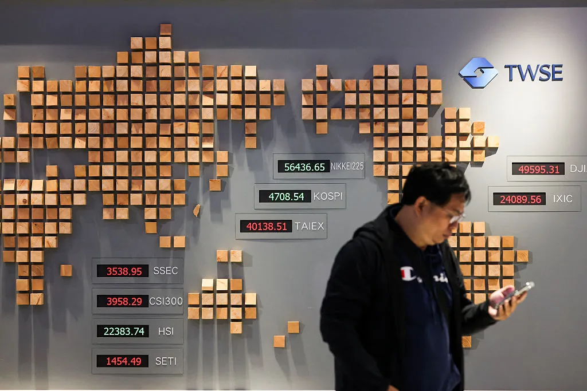

Nvidia сообщила производственным партнёрам, включая Dell и Super Micro, что отгрузки серверов в Малайзию, Сингапур, Таиланд и Индонезию нужно поставить на паузу. Срок приостановки не назван: компания намерена разобраться, выполняют ли региональные партнёры требования американского экспортного контроля. Первым сообщил об этом The Wall Street Journal, пересказ делает TechCrunch.
Через дата-центры в Юго-Восточной Азии китайские компании получали удалённый доступ к ускорителям Nvidia, формально не нарушая запрет на ввоз чипов в Китай. В начале ноября Минторг США закрыл эту лазейку — по данным Washington Post, не без внутреннего конфликта между казначейством и Торговым ведомством. Аналитики аналитического центра Institute for Progress оценивают: такие удалённые дата-центры обеспечивают около 24% китайских ИИ-вычислений.
Компания не публиковала официального заявления о паузе — источник информации только репортаж WSJ. Это значит, что сроки и критерии проверки известны лишь участникам переписки с партнёрами, и отгрузки могут возобновиться без публичного объявления. Практический вывод для рынка: Вашингтон методично закрывает оставшиеся обходные пути к ИИ-вычислениям, и Юго-Восточная Азия из «тихой гавани» для дата-центров превращается в зону повышенного комплаенс-риска.
Юго-Восточная Азия в последние годы задумывалась как альтернативный маршрут к мощностям для обучения моделей. Пауза Nvidia показывает: пока экспортный контроль ужесточается, любой дата-центр в регионе становится ставкой на то, что проверяющие признают его «чистым». Для заказчиков это означает не отмену поставок, а неопределённые сроки и дополнительные бумажные проверки.